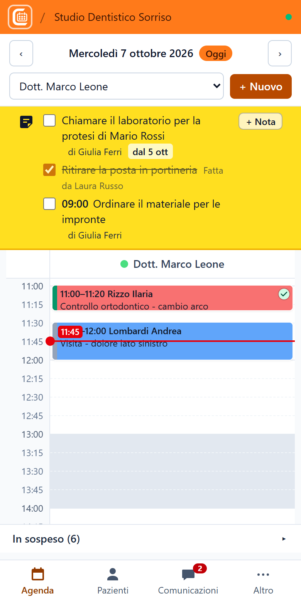
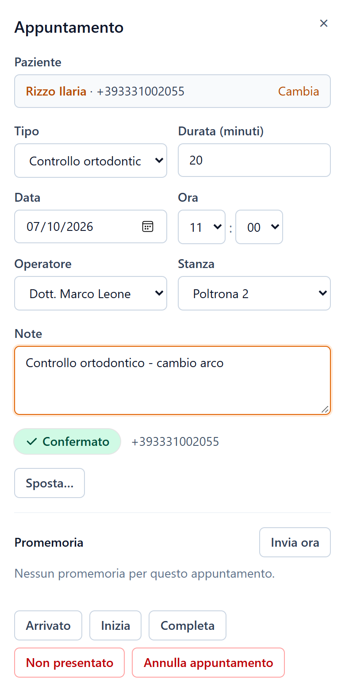
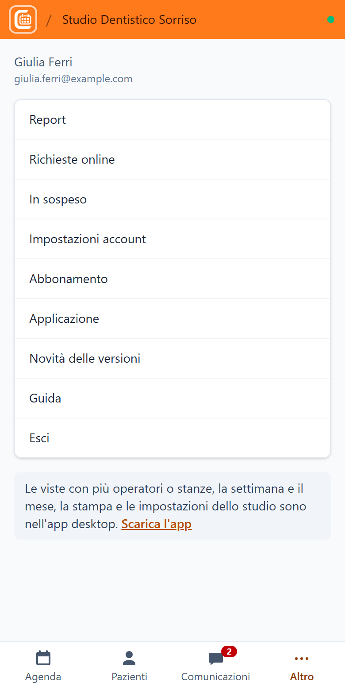

11. Versione web e telefono
Oltre all'app per il computer, Enident Planner funziona dal browser all'indirizzo https://app.enident.it, con lo stesso account e gli stessi dati.
Dal browser del computer
- Apri https://app.enident.it con Chrome, Edge, Firefox o Safari.
- Accedi con email e password.
La versione web ha le stesse funzioni dell'app. Le differenze:
- non si aggiorna da sola: ricarica la pagina per avere l'ultima versione;
- la stampa e i file scaricati passano dal browser;
- nell'app per il computer l'accesso resta memorizzato nel portachiavi di Windows; nel browser resta nel browser stesso: su un computer condiviso esci sempre alla fine (menu con il tuo nome → Esci).
Dal telefono
Sul telefono si apre un'agenda pensata per il dito.



Aggiungere l'icona alla schermata Home
- iPhone (Safari): apri https://app.enident.it, tocca il pulsante Condividi e poi Aggiungi alla schermata Home.
- Android (Chrome): apri https://app.enident.it, tocca il menu ⋮ e poi Aggiungi a schermata Home (o Installa app).
Enident si apre poi come un'app, a tutto schermo.
L'agenda sul telefono
- In alto il giorno, con le frecce; scorri col dito a destra o a sinistra per passare al giorno dopo o a quello prima.
- Sotto, l'operatore da vedere: si sceglie dal menu. Con il telefono in orizzontale si vedono fino a tre operatori affiancati.
- Tocca uno spazio libero o + Nuovo per creare un appuntamento, poi cerca il paziente o crealo al volo.
- Tocca un appuntamento per aprirlo: cambi stato, note e promemoria; per cambiare orario usa Sposta… (giorno, ora e operatore; la durata resta la stessa). Sul telefono gli appuntamenti non si trascinano.
- In fondo, In sospeso apre la lista d'attesa e i pazienti da richiamare.
La barra in basso
- Agenda;
- Pazienti: l'elenco con la ricerca e la scheda del paziente;
- Comunicazioni: messaggi inviati e risposte dei pazienti;
- Altro: report, richieste online, impostazioni account, abbonamento, applicazione, novità, Guida, cambio studio ed Esci.
Cosa resta sul computer
Le viste con più operatori o stanze, la settimana e il mese, la stampa e le impostazioni dello studio (orari, operatori, promemoria, canali…) si usano dall'app per il computer o dalla versione web su un computer.
← Impostazioni · Indice · Domande frequenti →
Guida aggiornata alla versione 1.1.1 di Enident Planner.